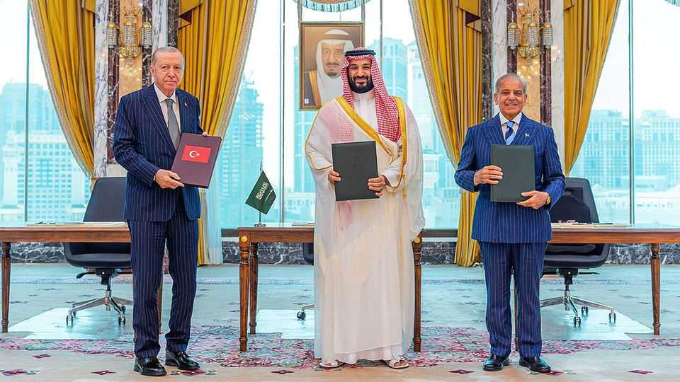

What to make of a new Saudi-led defence pact
Turkish arms producers may be the first beneficiaries

Aug 13th 2026
ONE boasts NATO’s second-largest army and a booming defence sector. Another is the Muslim world’s only nuclear power. And the third is the world’s eighth-biggest arms spender. No wonder that Turkey, Pakistan and Saudi Arabia made a splash on August 7th when they signed a defence pact, especially after officials said it included a mutual-defence clause similar to NATO’s Article 5. “Any armed attack against any one of the three states shall be regarded as an attack against them all,” said Pakistan’s foreign ministry.
The three powers stress that other regional powers are welcome to join the pact, batting away suggestions of a Sunni military bloc in the making. But the religious symbolism was laid on thick at the signing, attended by Turkey’s president, Recep Tayyip Erdogan, Pakistan’s prime minister, Shehbaz Sharif, and their host, Muhammad bin Salman, the Saudi crown prince (pictured). Instead of Riyadh, the Saudi capital, the ceremony took place in Mecca, Islam’s holiest city. Afterwards, the three leaders prayed at the city’s Grand Mosque.
One purpose of the deal is to act as a counterweight to Israeli influence. The rapid succession of Israeli military operations in Gaza, Lebanon, Syria and Iran, the attack that killed Hamas negotiators in Qatar, and a sense that Israel’s appetite for regional dominance is not yet sated, have set off alarms across the Middle East. Such concerns are most acute in Turkey, which some Israeli politicians and officials have described as a threat on a par with Iran.
Meeting the threat from Iran itself is another key aim. Though badly hobbled, its regime has proved capable of wreaking havoc across the region when under attack, especially in the Gulf. It has also shown how much leverage it wields by disrupting shipping through the Strait of Hormuz. “Using Hormuz against regional countries has become one of the pillars of Iran’s new strategy,” says Murat Yesiltas, the head of SETA, a think-tank close to Mr Erdogan’s government. The three signatories “will not target Iran”, says Mr Yesiltas, “but they want to show collective deterrence.” Iran said it saw no reason to fear the pact.
The deal also reflects mounting concerns about American priorities and the credibility of its security guarantees. Turkey, like other NATO members, is worried about the risk of a broader American pullback from both Europe and the Middle East. Saudi confidence in America was shaken after Iran made large holes in the air-defence umbrella that America has helped spread over the Gulf.
Israel’s government has not responded publicly to news of the pact, but the announcement was greeted with dismay there. The country already sees Turkey and Pakistan as hostile powers and resents the cosy relations their leaders have fostered with America’s president, Donald Trump. The pact also underscores how remote the prospect of normalisation between Israel and Saudi Arabia remains. “It will have to wait until there is a new government in Israel,” says an Israeli diplomat, “and even then, it will take time.”
The chances that any of the deal’s signatories would actually intervene on behalf of the others appear slim. Saudi Arabia and Turkey would not come to Pakistan’s defence if war with India broke out; Pakistan or Turkey would not respond in kind to Iranian missile launches against Saudi Arabia. For the time being, says Mr Yesiltas, the pact is less a muscular military alliance than a platform for security and defence co-operation. Saudi Arabia’s deep pockets and procurement needs, Turkey’s defence sector and Pakistan’s military-industrial base make for a potent combination. Turkish defence tech firms in particular are rubbing their hands. Baykar, a Turkish drone-maker, signed a landmark contract with Saudi Arabia in 2023. Pakistan used Turkish drones during its conflict with India last year.
But Turkey is hungry for more. Its defence projects, including an indigenous fighter jet known as the KAAN, a new “Steel Dome” air-defence system, and long-range ballistic missiles, are expected to cost tens of billions of dollars. Turkey’s economy, plagued by inflation that continues to hover above 30%, cannot shoulder that cost alone. Saudi defence contracts and investments would go a long way to help fund the plans, says Caglar Kurc, a Turkish analyst. That may be where the Mecca Agreement pays its first dividends. ■